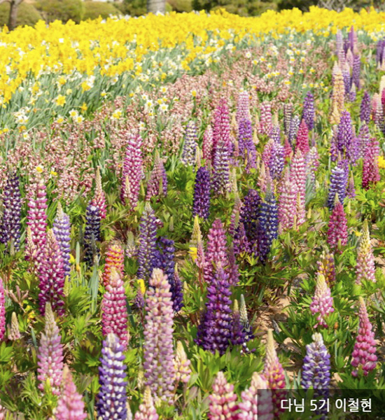

TOUR
-
갈음이해수욕장(펜션에서 차량으로 2분거리)
더보기
갈음이 해수욕장백사장 길이 800m, 폭 250m로 태안 읍내에서 서쪽으로 약 20㎞ 떨어진 서해 바닷가에 위치하고 있습니다.
해변의 모래가 매우 곱고 바닷물이 깨끗하며 천연의 사구가 발달되어 있고, 또한 울창한 소나무가 숲을 이루고 있어 가족 단위의 피서객이 야영하기에 적합합니다. -
 안흥항(펜션에서 차량으로 5분거리)
안흥항(펜션에서 차량으로 5분거리)더보기
어촌정주생활의 중심지역할을 수행하는 다기능 어항을 개발하여 어선·여객선의 안전정박과 원활한 어획물양육 등 어민소득증대를 위하여 어항이 개발되었습니다.
정죽리 새우양식장 방조제 남측 기부에서 마도 북측 표고 71m 산정과 마도 남측 돌단 산정을 연결 이곳에서 정남으로 700m 해상점과 죽도를 연결 죽도에서 정동으로 600m 해상점을 각각 연결하는 선을 따라 형성되었습니다. -
연포해수욕장(펜션에서 차량으로 5분거리)
더보기
연포해수욕장은 마치 활처럼 휜 백사장이 장관을 이루고 있습니다.
앞바다에 그림처럼 떠 있는 섬은 보는 이로 하여금 감탄을 자아내고, 난류의 영향으로 수온이 높아 개장기간이 전국에서 가장 긴 것으로도 유명합니다.
울창한 송림과 해안선을 따라 이어지는 기암이 일품입니다.
(사진 출처: 한국관광공사) -
팜카밀레 허브농원(펜션에서 차량으로 40분거리)
더보기
"팜 카밀레"는 샵과 온실 위주의 기존의 허브농장과는 차별화된 전략, 즉 허브농원이 추구하고자 하는 관상적 가치뿐만 아니라, 원회적 가치, 생활적 가치를 방문하시는 고객 모두에게 전달하고자 합니다.
캐모마일가든, 로즈가든, 칼라가든, 보태니컬가든, 와일드가든, 라벤다가든, 토피어리가든의 7개의 테마 가든과 이곳 팜카밀레에서만 맛볼수 있는 허브빵과 허브로 만든 식사로 여러분을 맞이하여 허브의 향기를 눈으로, 입으로, 코로 담아갈 수 있도록 하였습니다. -
청산수목원(펜션에서 차량으로 40분거리)
더보기
청산수목원은 연꽃과 수련, 창포 등 200여 종의 습지식물이 어우러진 수생식물원, 밀레·고흐·모네 등 예술가들의 작품 속 배경과 인물을 만날 수 있는 테마정원, 계절 따라 다양한 모습을 연출하는 산책로와 황금메타세쿼이아 등 600여 종의 나무들이 둥지를 틀고 있는 수목원으로 꾸며져 있습니다.
-
네이처월드(펜션에서 차량으로 50분거리)
더보기
태안 마검포해수욕장 근처에 위치한 네이처월드에서는 1년 365일 쉼 없이 축제가 열리고 있습니다.
네이처월드에서 연중무휴로 진행되는 태안빛축제에서는 600만 구의 LED 전구가 축제장을 화려하게 수놓고 있고, 낮에는 튤립이 아름답게 피어 아름다운 자태를 뽐내고 있고, 밤이면 화려한 LED 조명이 장관을 연출합니다.